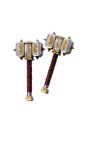

Сержант

Редкость: Rare
Пол: Male
Фракция: Legion
Энергия: Shadow
Класс: Normal
Добыча: Arena 3: Rift
| Название | Редкость | Изображение |
|---|---|---|
| Командир легиона | Обычный | |
| Рука старейшин | Редкий | |
| Спаситель капитала | Эпический | |
| Древар из Соколиного ущелья | Эпический | |
| Страшная метаморфоза | Эпический | |
| Душа Хранителя | Сезонный |  |
| Опытный командир | Сезонный | |
| Морозный щит Легиона | Сезонный |
| Название | Редкость | Изображение |
|---|---|---|
| Молотки командира отряда | Обычный |  |
| Удары коленом | Обычный | |
| Молот надзирателя | Обычный | |
| Капитальные валуны | Обычный | |
| Надежда Севера | Обычный | |
| Большие молоты | Обычный | |
| Симбиоз | Обычный | |
| Пионеры вечной мерзлоты | Обычный | |
| Прямые нападающие | Редкий | |
| Тирания | Редкий | |
| Грохочущие слова | Редкий | |
| Лазурные волновые молоты | Редкий | |
| Жнецы амбиций | Редкий | |
| Детонаторы | Эпический | |
| Тюрьма Душ | Эпический |
| Название | Описание | Изображение |
|---|---|---|
| Жажда Тени | Саржант получает дополнительную теневую энергию за урон, полученный, пока он неуязвим. |  |
| Разрушение воли | Увеличивается длительность Подавление воли. Увеличивается количество бонусного урона, который получает противник. | |
| Уволен! | Удачный сильный удар ногой сбивает противника с ног. | |
| Неудержимый | Находясь в форме Тени, Сержант постепенно восстанавливает свое здоровье. |  |
| Верный молоток | Дистанционная атака: Сержант бросает свой молот, сбивая противника с ног при попадании. | |
| Тренировка Теней | Продолжительность существования формы тени увеличена. |  |
| Пресс-релиз Командира | Вращающаяся атака оглушает противника при попадании. | |
| Опыт | Сардж немедленно принимает форму тени. | |
| Месть за павших | Если у вашего противника менее 25% здоровья, любое падение немедленно его победит. |  |
| Упорство | Если Саржант подвергнется атаке, пока он неуязвим, вокруг него произойдет взрыв, оглушающий врага. | |
| Судьба силы | У героев вашей команды повышен критический урон. | |
| Судьба Боли | У героев вашей команды увеличена продолжительность пребывания в форме тени. |  |